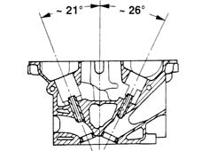
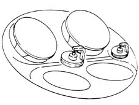
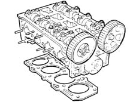
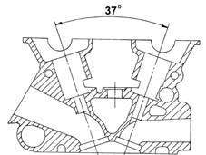
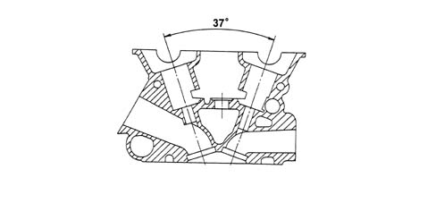
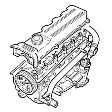
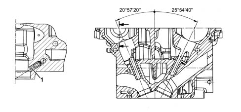
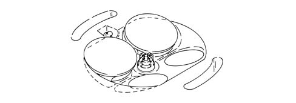
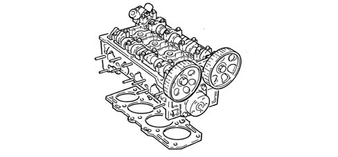
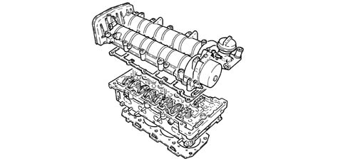

1016E cylinder head/s - various operations
- Path
- Descriptions > 10 ENGINE > 1016 CYLINDER HEAD/S > 1016E cylinder head/s - various operations
- Kind
- system description
- Applies to
- engines: 1.6 TS , 1.8 TS, 2.0 JTS, 2.5 V6, 3.2 V6, 1.9 JTD 8v , 1.9 JTD 16v, 2.0 JTS, 2.4 JTD 10v; all production periods
- Interactive page
- https://sloeber94.github.io/elrnDB-a156/en/#/3232820
Applies to: engines: 1.6 TS , 1.8 TS; all production periods
The cylinder head is of the monolithic type, of aluminium-silicon alloy.
The four valves per cylinder are mounted in their respective guides in V formation at about 47° and controlled by two camshafts via hydraulic tappets.

The space layout enables the combustion chambers to accommodate:
- the four valve heads
- the hole of the central spark plug
- the hole of the lateral spark plug
with the advantage of improving the engine's thermal efficiency and reducing harmful exhaust emissions.

The valve guides are installed by interference fit in their seats in the cylinder head.
The inner diameter is finished off after assembly, using a specific reamer.
The cylinder head gasket is of the Aramide fibre type, and there is no need to retighten the cylinder head at all during the life of the engine.

Applies to: engines: 2.5 V6; all production periods
They are the monolith type, compact and made from light aluminium slicon alloy.
The four valves per cylinder are mounted in their respective guides in V formation at about 37° and controlled by two camshafts via hydraulic tappets.
The camshafts rotate on four supports and are driven by means of a toothed belt.
The valve guides are installed by interference fit in their seats in the cylinder head.
The inner diameter is finished off after assembly, using a specific reamer.

Applies to: engines: 3.2 V6; all production periods
CONSTRUCTION FEATURES
They are the monolith type, compact and made from light aluminium slicon alloy.
The four valves per cylinder are mounted in their respective guides in V formation at 37° and controlled by two camshafts via hydraulic tappets.
The camshafts rotate on four supports and are driven by means of a toothed belt.
The valve guides are installed by interference fit in their seats in the cylinder head. The inner diameter is finished off after assembly, using a specific reamer.

Applies to: engines: 1.9 JTD 8v , 2.4 JTD 10v; all production periods
The cylinder head is of the monolithic type, of aluminium-silicon alloy.
The two valves per cylinder, parallel and vertical, are fitted in the valve guides and are operated by a single overhead camshaft with cams acting on mechanical type tappets.
The valve guides are an interference fit in the cylinder head seats and the internal diameter is corrected, after fitting, using a special reamer.
Compared with heads with ante-chambers, the entire combustion process takes place in the combustion chamber in the piston.
The cylinder head gasket is of the Aramide fibre type, and there is no need to retighten the cylinder head at all during the life of the engine.

Applies to: engines: 2.0 JTS, 2.0 JTS; all production periods
CONSTRUCTION FEATURES
The cylinder head is of the monolithic type, of aluminium-silicon alloy.
The four valves per cylinder are mounted in their respective guides in V formation at about 47° and controlled by two camshafts via hydraulic tappets.
A calibrated jet (1) fitted inside the cylinder head lubricates the high fuel pressure control coupling.

The space layout enables the combustion chambers to accommodate:
- the four valve heads;
- the spark plug hole;
- the injector hole;
with the advantage of improving the engine's thermal efficiency and reducing harmful exhaust emissions.

The valve guides are installed by interference fit in their seats in the cylinder head.
The inner diameter is finished off after assembly, using a specific reamer.
The cylinder head gasket is metallic and there is no need to retighten the cylinder head at all during the life of the engine.

Applies to: engines: 1.9 JTD 16v; all production periods
CONSTRUCTION FEATURES
The cylinder head is of the monolithic type, of aluminium-silicon alloy.
Two cast iron camshafts, in a camshaft housing; driven by a belt and gears.
The four valves per cylinder, parallel and vertical, are positioned in the valve guides and operated by rockers controlled by camshaft cams kept in contact with the valves by means of hydraulic tappets.
The valve guides are installed by interference fit in their seats in the cylinder head. The bore is finished off after assembly, using a specific reamer.
Compared with heads with precombustion chambers, the entire combustion process takes place in the combustion chamber in the piston.
The cylinder head gasket is of the multilayer metal type, and there is no need to retighten the cylinder head at all during the life of the engine.
